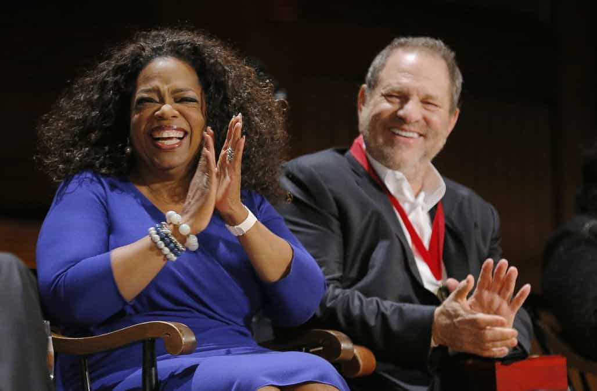

Mr. Luthra is an author and artist who writes about news, fitness, culture, and anything else that meets his interests. If you like his style, visit The Straightforward Voice, where you can find more FREE content.


Oprah Winfrey’s recent speech at the Goblin Globe Awards sparked a new controversy that she might run as a candidate during the next presidential election against Donald Trump. Her speech compared Hollywood actresses with past rape victims and made a strong statement that women are going to rise up. The program wasn’t anything different compared to previous years. However, there was one surprisingly good result: Gary Oldman won the best actor award for playing Winston Churchill, a white man.
Her speech was focused on empowering women and rising above the apparent male enslavement society. One example she gave was Recy Taylor, an African woman, being raped by six armed white men on her way home from church, and how justice was never delivered. Taylor recently died, and the men got away.
Building off of that, she said that women for too long have been kept quiet due to being afraid to speak up against brutally powerful men, and went on to say that “their time is up” three times while the puppet Hollywood audience rose to their feet and applauded, even men who played tough guy roles.
Of course Winfrey brought up the Jim Crow narrative and played the victim of living under oppressive men even though she’s a billionaire who used the American system to become what she is today. She declared “that a new day is on the horizon,” and that it will be due to magnificent women and some pretty phenomenal men who will take us to the “time when nobody has to say ‘Me Too‘ again.” She even praised the press for the job they do for delivering the truth even though 2017 was filled with leaks of the media making up fake news like the Trump/Russian connection.
Oprah brought up race and rape, but she failed to mention that she was best friends with Harvey Weinstein. It’s hard to believe that she didn’t know about his sexual antics.
“It’s okay honey, the sex with him will be very quick.”
The spokesperson for protecting women was friends with one of the biggest abusers of women.

In a BBC interview in 2013, Oprah revealed her true colors, saying that there are some people who are racists, and that “they have to die.”
The establishment may want to use someone like her, because she can play the race card while extrapolating the lie that women have been suppressed by men, therefore pushing the idea that a female president is needed. However, in the past, some of the most powerful men in history were all controlled by women behind the curtains.
Oprah was not exactly the poor oppressed woman she pretended to be as she made a lot of money through her show. Although she brought up race, she frequently hung out at yachts with people like Diane Sawyer, and lives a lavish life that counters the character she was playing on stage. She likes to say she grew up impoverished, but her cousin said she was a “spoiled” little girl.
“Where Oprah got that nonsense about growing up in filth and roaches I have no idea,” said relative, Katherine Carr Esters. “I’ve confronted her and asked, ‘Why do you tell such lies?’ Oprah told me, ‘That’s what people want to hear. The truth is boring.’ ”
Biographer Kitty Kelly revealed more skeletons from Oprah’s past like bringing men home for sex while her mom was at work, and that Oprah described herself in an unreleased autobiography, as a teen “prostitute”, using her body to earn extra money. There are other shady things like paying $50,000 to her ex-boyfriend to keep quiet of her lesbian affairs and gay brother, and modifying her life story to prop up her success. She is also buddies with Michelle Obama and Ellen Degeneres.
Very few in this world has a pure past and everyone has to do what they must to get ahead, but Oprah’s position seems to be in line with the feminist’s agenda to attack masculinity in America, rather then the quest for justice she displayed at the awards.

Trump has improved the economy, destroyed most of ISIS along with Russian forces and Eastern allies, reduced illegal immigration, and he is steadily get of rid of corruption. Yes, there are neocons within his administration who are trying to lead him astray, and yes some of his actions are questionable, but he is still the best shot America has against the globalists.
Oprah is likely another desperate attempt to steal the next election by the globalists who are so scared of Trump, that they’re trying anything to protect their power. I have no doubt that she will lose in the next election if she decides to run.
Read More: Kiss Talks About Groupies On Oprah